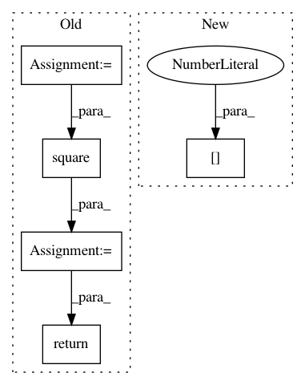

dad476faf6c1b03d9e940edb65cdcee9b6a36e2c,GPy/kern/_src/linear.py,Linear,psi2,#Linear#Any#Any#,129
Before Change
def psi2(self, Z, variational_posterior):
if isinstance(variational_posterior, variational.SpikeAndSlabPosterior):
gamma = variational_posterior.binary_prob
mu = variational_posterior.mean
S = variational_posterior.variance
mu2 = np.square(mu)
variances2 = np.square(self.variances)
tmp = np.einsum("nq,q,mq,nq->nm",gamma,self.variances,Z,mu)
return np.einsum("nq,q,mq,oq,nq->nmo",gamma,variances2,Z,Z,mu2+S)+\
np.einsum("nm,no->nmo",tmp,tmp) - np.einsum("nq,q,mq,oq,nq->nmo",np.square(gamma),variances2,Z,Z,mu2)
else:
ZA = Z * self.variances
ZAinner = self._ZAinner(variational_posterior, Z)
return np.dot(ZAinner, ZA.T)
After Change
@Cache_this(limit=1)
def psi2(self, Z, variational_posterior):
if isinstance(variational_posterior, variational.SpikeAndSlabPosterior):
return self.psicomp.psicomputations(self.variances, Z, variational_posterior.mean, variational_posterior.variance, variational_posterior.binary_prob)[2]
else:
ZA = Z * self.variances
ZAinner = self._ZAinner(variational_posterior, Z)
return np.dot(ZAinner, ZA.T)
In pattern: SUPERPATTERN
Frequency: 3
Non-data size: 5
Instances
Project Name: SheffieldML/GPy
Commit Name: dad476faf6c1b03d9e940edb65cdcee9b6a36e2c
Time: 2014-05-15
Author: z.dai@shef.ac.uk
File Name: GPy/kern/_src/linear.py
Class Name: Linear
Method Name: psi2
Project Name: ray-project/ray
Commit Name: ce96b03b07a4a4bdd851aa84493c616cd291aff2
Time: 2020-10-06
Author: sven@anyscale.io
File Name: rllib/examples/env/mbmpo_env.py
Class Name: HopperWrapper
Method Name: reward
Project Name: tensorflow/transform
Commit Name: 8d9423dbbb0b9b2971a68e19ef0b4924bd192979
Time: 2018-06-28
Author: tf-transform-dev@google.com
File Name: tensorflow_transform/analyzers.py
Class Name:
Method Name: var